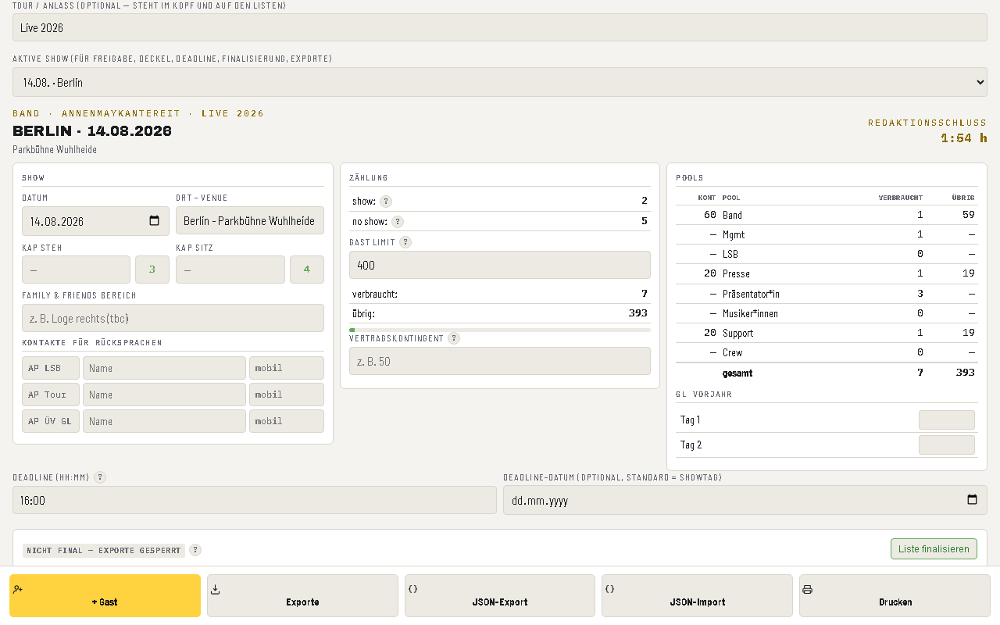
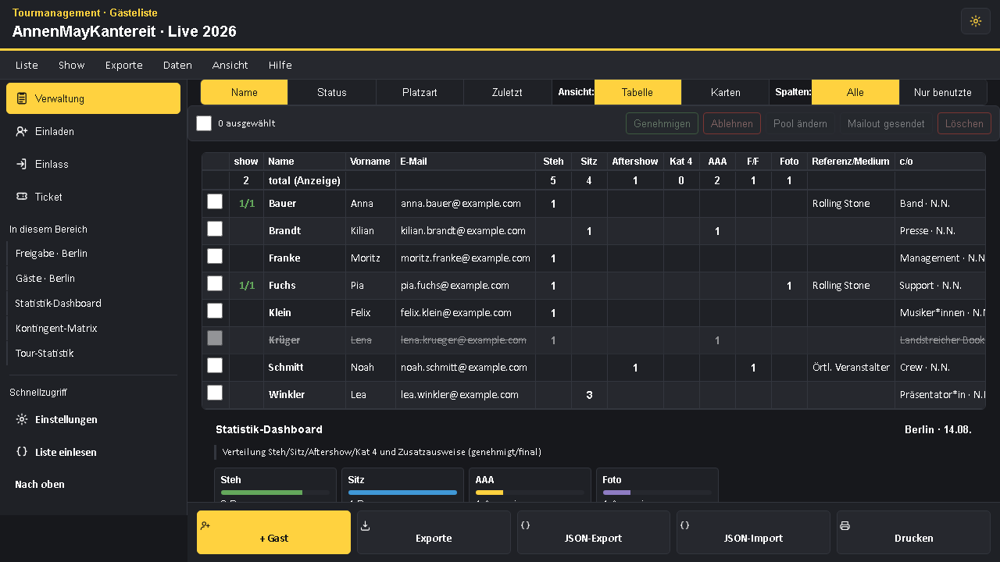
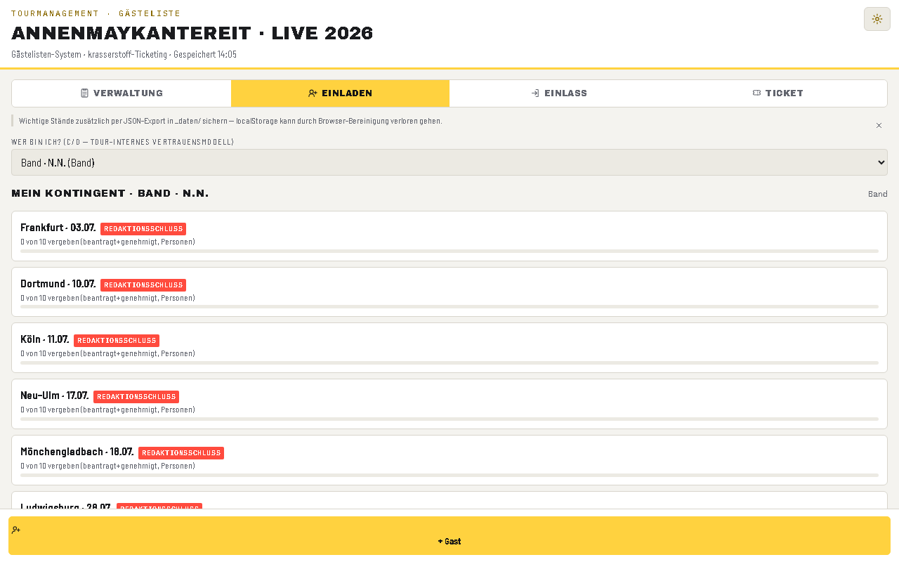
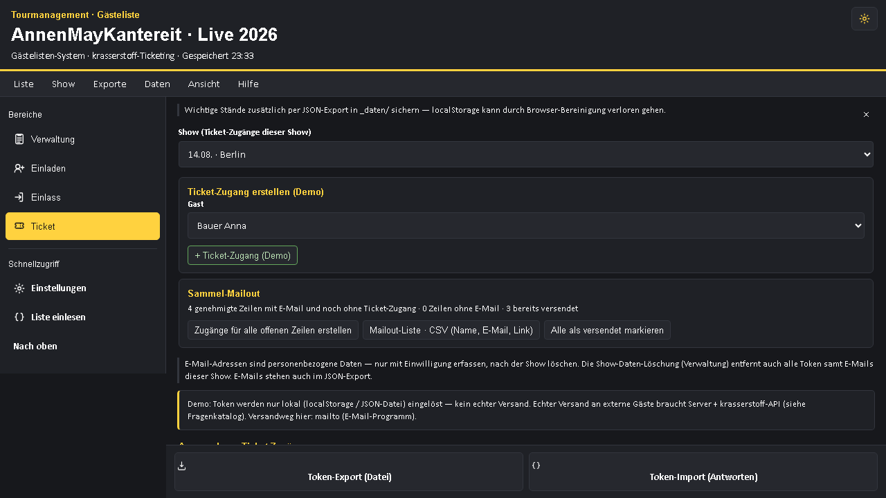
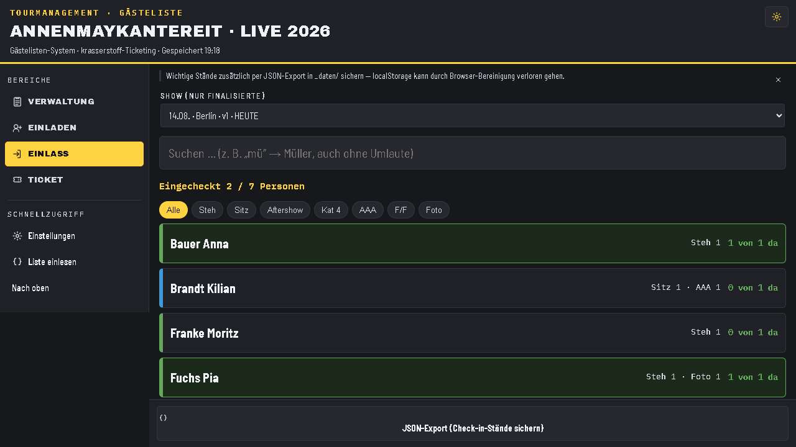
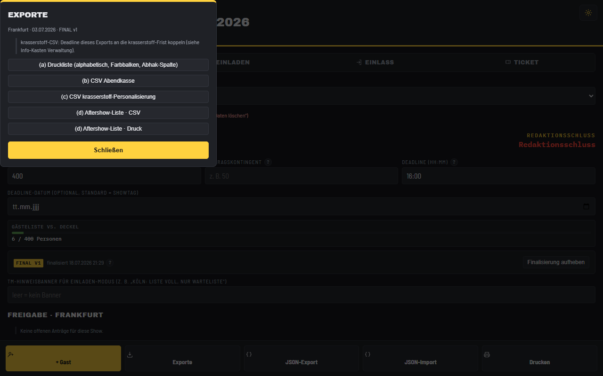

Gleicher Kopfblock. Gleiche Spalten. Gleiche Begriffe. Nur ohne die Handarbeit dahinter — und mit Ticket-Versand, Einlass am Handy und Exporten auf Knopfdruck.
AnnenMayKantereit · Live 2026 · Stand 14.08.2026
Ein Tabellenblatt je Show. Oben der Kopfblock mit Kapazitäten, Gast Limit und den Pool-Kontingenten, darunter ab Zeile 13 die Gästezeilen. Die Zahlen im Kopf rechnen sich aus den Zeilen zusammen.
| Bereich | Was dort steht |
|---|---|
| Kopf links | Datum · Ort - Venue · Kap Steh · Kap Sitz · Family & Friends Bereich · Kontakte für Rücksprachen (AP LSB, AP Tour, AP ÜV GL) |
| Kopf Mitte | show · no show · Gast Limit · verbraucht · übrig |
| Kopf rechts | Kont · Pool · verbraucht · übrig für Band, Mgmt, LSB, Presse, Präsentator*in, Musiker*innen, Support, Crew — dazu der Vorjahresvergleich |
| Zeile 12 | show · Name · Vorname · E-Mail · Steh · Sitz · Aftershow · Kat 4 · AAA · F/F · Foto · Referenz/Medium · c/o · Pool · Notiz |
| Spalte P | die Merkzeile „Mailout bis hier versendet" |






| Export | Wofür |
|---|---|
| (e) Gewohnte Tabelle | Kopfblock, Summenzeile und Spalten an derselben Stelle wie heute |
| (a) Druckliste | Alphabetisch, mit Farbbalken und Abhak-Spalte |
| (b) Abendkasse | Name, Personen, Plätze, c/o |
| (c) krasserstoff | Eine Zeile pro Person für die harte Personalisierung |
| (d) Aftershow | Als Liste zum Drucken und als Datei |
| Heute | Mit dem Werkzeug |
|---|---|
| Namen kommen per Mail und werden abgetippt | Einladende tragen selbst ein, mit eigenem Kontingent |
| Freigabe über Farben, Kommentare oder Zuruf | Klarer Weg: angefragt → genehmigt/abgelehnt → final |
| Kontingent im Kopf mitrechnen | Pool-Tabelle zeigt Kont, verbraucht und übrig laufend |
| Merkzeile „Mailout bis hier versendet" | Jede Zeile trägt ihren Versandstand selbst |
| Tickets manuell verschicken | Persönlicher Zugang je Zeile, Sammelanlage, Versandliste |
| Ausgedruckte Liste an der Tür, Striche mit Kuli | Check-in am Handy, jede Person einzeln, live gezählt |
| Welche Fassung liegt an der Abendkasse? | Finalisierung mit Versionsnummer, Nachträge markiert |
| Nach der Show: Zahlen zusammensuchen | show/no show, Auslastung und Vorjahresvergleich stehen da |
| Personendaten bleiben in alten Tabellen liegen | Löschung auf Knopfdruck, Statistik bleibt anonym erhalten |
Das Werkzeug läuft im Browser, ohne Installation. Einfach den Link öffnen — die mitgelieferten Beispieldaten lassen sich gefahrlos anklicken und jederzeit wieder entfernen.
Consec Nürnberg · Günther Siegert · auftragsplanung@consec-nuernberg.de